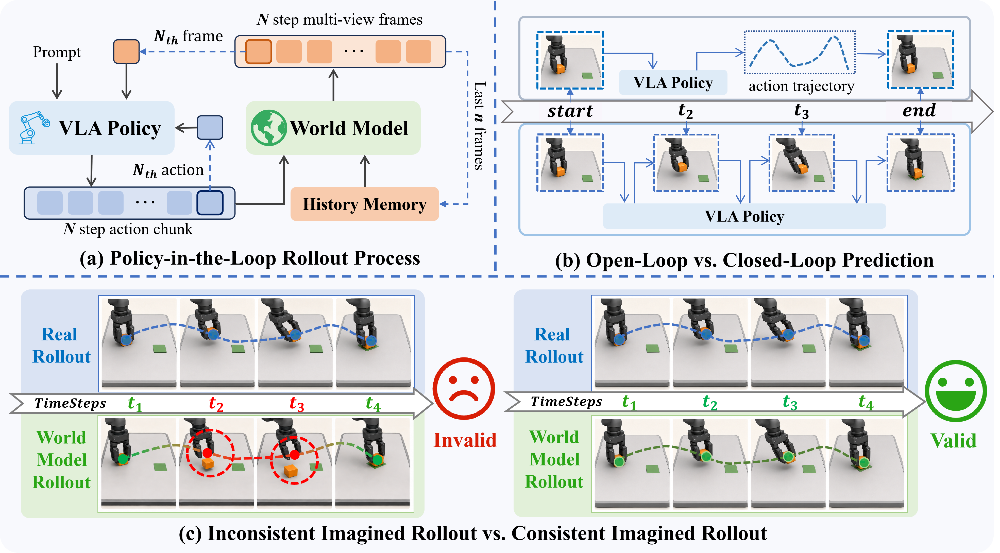
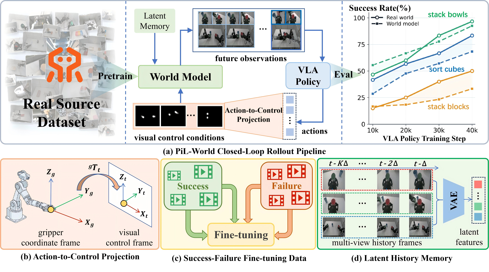
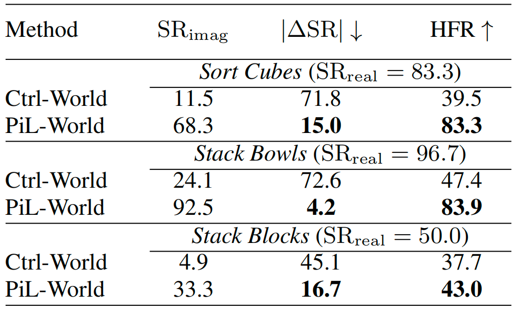
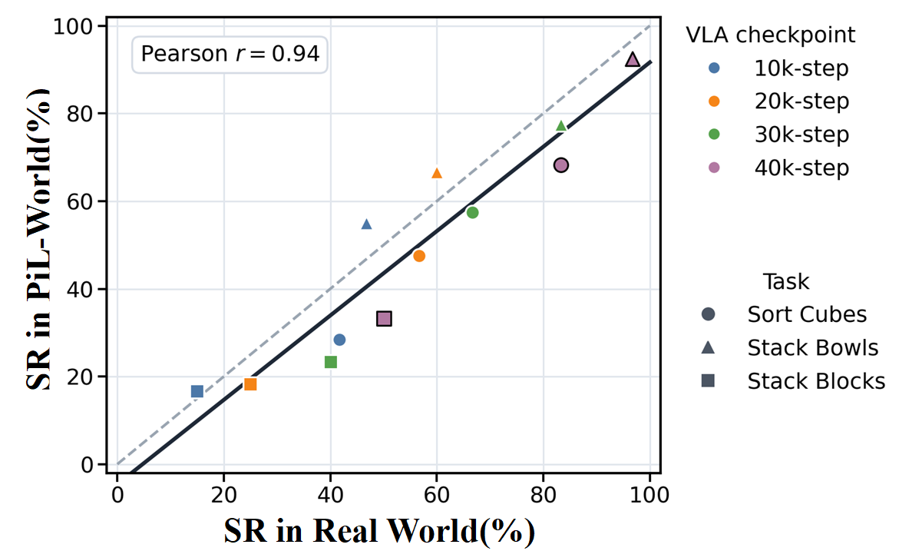
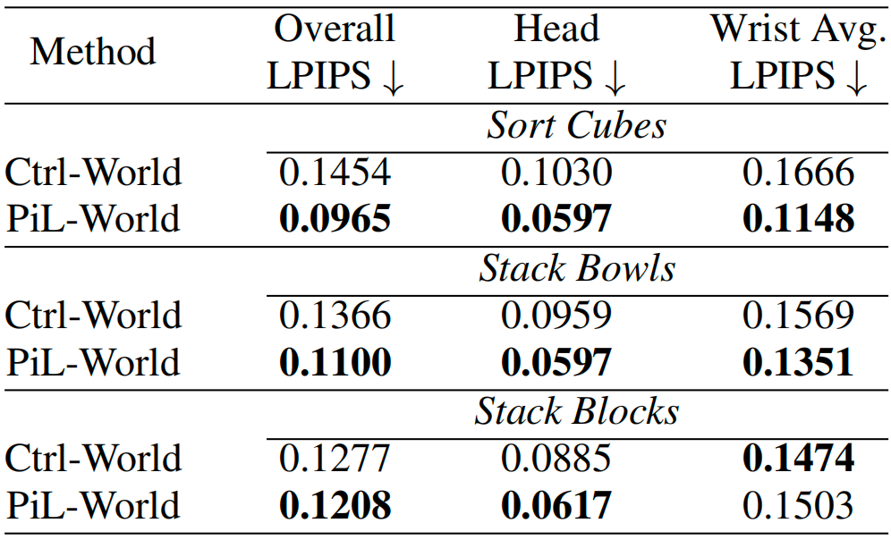
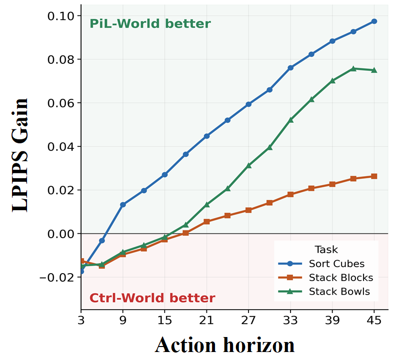

Vision-language-action (VLA) policies operate in a closed loop in real-world robot tasks: a robot observes the scene, executes an action chunk, and conditions its next decision on the resulting observation. However, most existing world models for robot action evaluation are limited to open-loop prediction along pre-collected action trajectories. This prevents them from supporting closed-loop VLA evaluation, where each action chunk must be conditioned on the observation generated by the previous execution. To address this gap, we propose PiL-World, a chunk-wise world model designed for Policy-in-the-Loop VLA evaluation. Given the current observation and the action chunk rolled out by a VLA policy, PiL-World generates multi-view future observations that are consistent with the VLA rollout and match the image inputs required by the policy. By alternating between VLA inference and world-model prediction, PiL-World enables closed-loop evaluation without real robot execution at every step. To improve rollout consistency, PiL-World conditions video generation on action-derived visual control from head-view robot motion and latent history memory that encodes task execution context, while jointly predicting synchronized multi-view observations. Beyond successful teleoperated demonstrations, it also learns from failed trajectories, helping imagined rollouts better capture diverse real policy execution outcomes.
Policy-in-the-loop evaluation requires a world model to map VLA-predicted action chunks to future observations and feed them back for subsequent policy queries. This differs from open-loop prediction, where the action trajectory is pre-collected and fixed. A valid imagined rollout should remain consistent with the real execution process rather than only producing visually plausible frames.

PiL-World first learns general robot-environment dynamics through pretraining on RealSource World, and is then fine-tuned on target-task trajectories containing both successful demonstrations and failed teleoperated executions. During rollout, a frozen VLA policy predicts an action chunk from the current observation and instruction. PiL-World projects this action chunk into visual control signals, conditions generation on latent history memory, and predicts a stride-aligned multi-view future segment. The terminal generated observation is fed back for the next policy query, and the resulting imagined rollout is compared with real-robot execution for evaluation.

PiL-World is evaluated on three real dual-arm manipulation tasks: sorting cubes, stacking bowls, and stacking blocks. Across the tasks, PiL-World reduces the average real-imagined success-rate gap from 63.2% for Ctrl-World to 12.0%, and improves average hallucination-free ratio from 41.5% to 70.1%. The following video compares real execution, PiL-World imagined rollout, and Ctrl-World imagined rollout.


PiL-World also achieves lower single-step LPIPS than Ctrl-World on all three tasks, indicating stronger action-conditioned visual prediction quality. The gain becomes more pronounced at later predicted frames, showing that PiL-World maintains lower perceptual prediction error over longer action-conditioned horizons.

